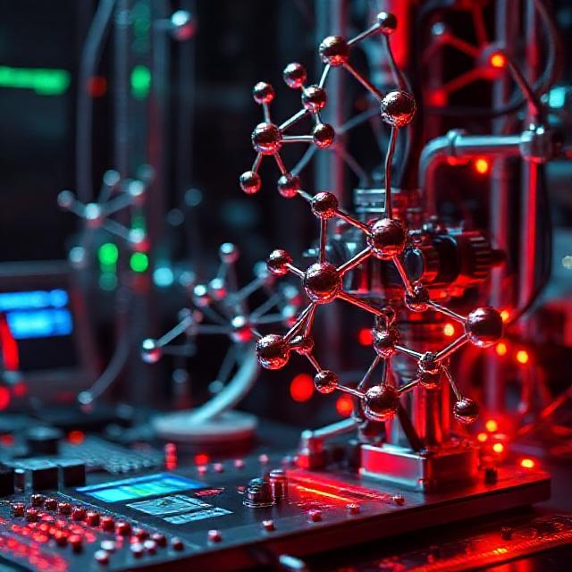

Fullheight hero
Fullheight subtitle

Medicinal Chemistry is the focus of the development and synthesis of medication through principles of chemistry. Medicinal Chemistry mainly focuses on drug discovery and development through modifying chemical compounds, with the goal of ultimately improving human health through safe and proper medication. Activties that involve medicinal chemistry are synthesizing new compounds and molecules, optimizing the drug synthesized for safe use, experimenting with the drug to analyze structure and purity.
Part A
Least Complex